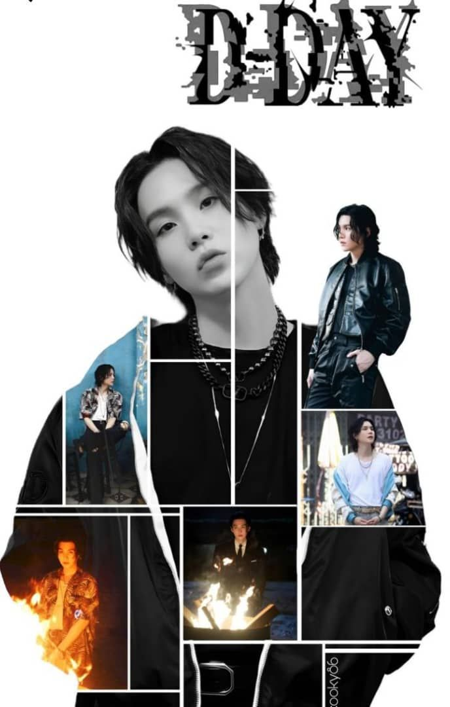
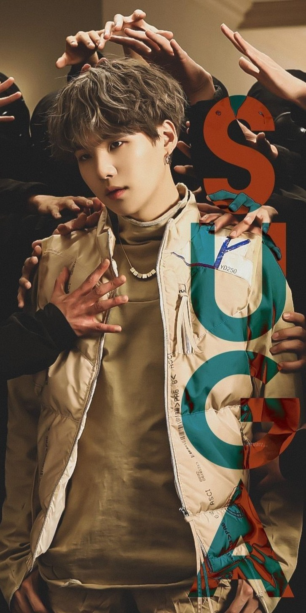
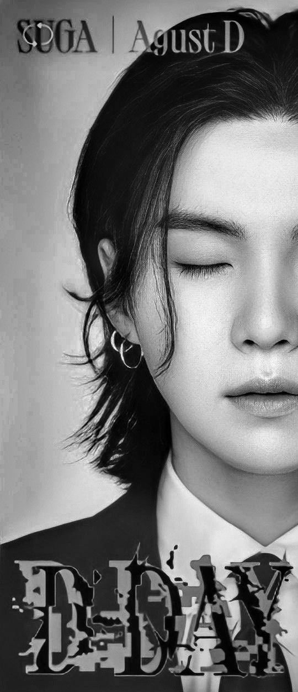

Min Yoongi est né le 9 mars 1993 à Daegu, en Corée du Sud.
A l’âge de 13 ans, il commence à écrire des paroles de musique et se familiarise avec le MIDI (Musical Instrument Digital Interface), une interface numérique dédiée aux instruments de musique.
Inspiré par des artistes tels que Stony Skunk ou encore Epik High, il se lance dans le hip-hop. Dès 17 ans, cette passion le pousse à travailler à temps partiel dans un studio d’enregistrement où il s’essaie à la composition et aux arrangements.
C’est ainsi qu’il acommencé à rapper. Il débute la scène underground à 17 ans sous le pseudonyme de Gloss, dans le crew hip-hop D-Town.
Parallèlement, il obtient ses diplômes à la Daegu Taejeon Elementary et Gwaneum Middle School.
Il était étudiant en deuxième année au lycée Kangbuk High School lorsqu’il a passé l’audition « Hit It » de Big Hit Entertainment.
Diplômé du lycée Apgujeong de Séoul en février 2012, Min Yoongi a obtenu son diplôme en 2019 à Global Cyber University dans le département « radiodiffusion et divertissement ».
Il s’est ensuite inscrit à la Hanyang Cyber University pour suivre le programme de Master en administration des affaires dans le domaine de la publicité et des médias.
Sa carrière...
...Dans BTS.
S’il rejoint Big Hit au début, c’est en tant que producteur de musique, son rêve.
Puis, Big Hit lui propose de rejoindre RM et J-Hope pour un groupe hip-hop, en tant que rappeur, sous le nom de scène"Suga".
Hésitant, il finit par accepter.
Mais lorsque quelques années plus tard le projet hip-hop « BTS » enclenche un virage pop, Suga freine des pieds ; la danse sera un sujet houleux.
Être idol, ça ne lui plaît pas, ça ne correspond pas à ses valeurs, ses habitudes, aux promesses miroitées.
Pourtant il finit par y prendre goût, aux côtés de J-Hope, tandis que d’autres quittent le projet.
Pendant un temps, il s’adonne alors au b-boying mais une grave blessure à l’épaule, survenue lors d’un accident de moto alors qu’il cumulait plusieurs petits jobs de livreur parallèlement à sa formation d’idole, le contraint à arrêter.
Effrayé à l’idée que la blessure, particulièrement handicapante pour ses performances personnelles, ne signe son renvoi du projet BTS, Suga passe sous silence l’incident.
Son épaule, mal guérie, ne sera opérée qu’en 2020, suite à une série de complications.
Dans Amygdala, cette histoire y est racontée, mais il ajoute que plusieurs problèmes familiaux s’étaient aussi ajoutés durant cette période très compliquée pour lui.
Depuis 2017, Suga révèle plusieurs collaborations en tant que producteur, renouant avec ses premières aspirations.
Il a notamment produit (et co-écrit) Wine pour la chanteuse Suran, qui atteint la deuxième position du Circle Digital Chart et remporte le titre de meilleure chanson Soul / R&B de l’année aux Melon Music Awards le 2 décembre 2017.
En 2019, il participe à la production de SUGA’s Interlude de Hasley. En 2020, il produit Eight, de IU : la chanson obtient, entre autres, le prix de la meilleure collaboration aux Mnet Music Award 2020.
Parolier, SUGA est à l’origine de nombreuses chansons de BTS : son nom est régulièrement crédité. Avec la chanson Savage Love (BTS Remix) (octobre 2020) SUGA, et j-hope deviennent les premiers paroliers/compositeurs coréens, officiellement enregistrés à la KOMCA, à atteindre la première place du BB Hot 100.
Le 2 décembre 2020, suite à la sortie de BE, SUGA se place 9ème du classement #Hot100Songwriters.
Avec RM (placé 3ème), il est le premier rappeur coréen à être dans ce classement.


...En tant que Agust D.
En 2016, SUGA adopte le pseudonyme Agust D pour ses activités musicales personnelles.
Suga explique à propos de ses eux pseudos Suga et Agust D « la différence, c’est que je peux m’exprimer ouvertement sur davantage de choses, montrer un côté plus brut de moi-même [avec Agust D] ».
Cependant, « ce qui est similaire, c’est que les deux chantent les rêves et l’espoir ».
L’album D-day, sorti en 2023, sera son premier projet physique et clôtura aussi la trilogie d’Agust D.
Ses paroles brutes et introspectives abordent des thèmes universels tels que la santé mentale, les luttes personnelles et les problèmes de société, et trouvent un écho auprès de nombreuses personnes, qu’elles soient ARMYs (fans du groupe BTS) ou non.
C’est par exemple dans la chanson Amygdala qu’il revient sur sa blessure à l’épaule ainsi que sur sa santé mentale.
La musique d’Agust D sert de testament à l’authenticité et à l’expression de soi, inspirant d’innombrables personnes à embrasser leur propre singularité et à dire leurs vérités.